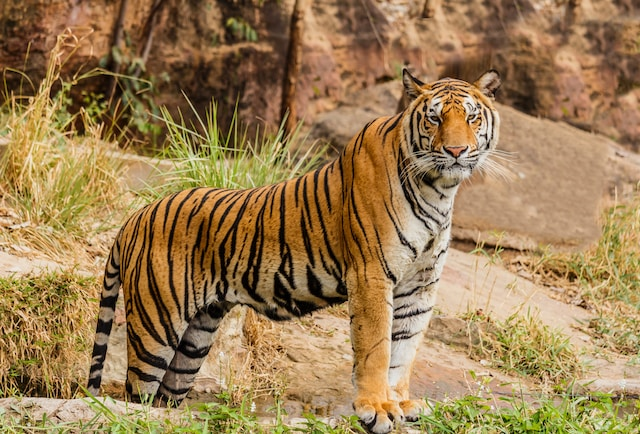
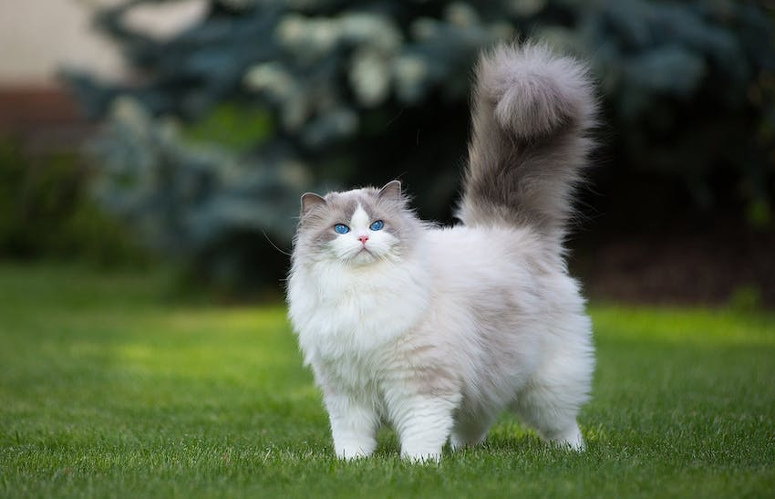
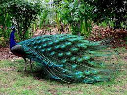
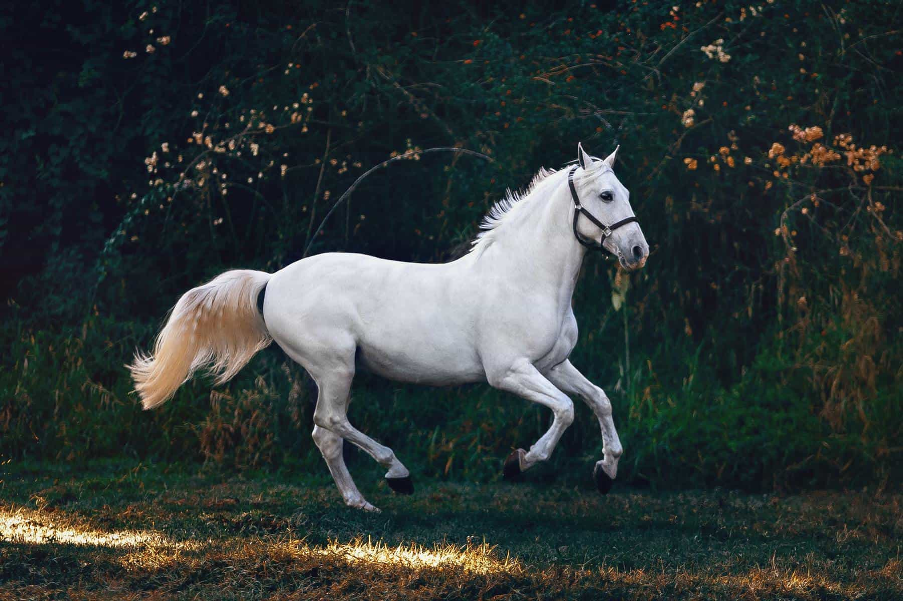

Article 1
Animals
Tiger

The tiger, a symbol of untamed wilderness, embodies power, grace, and the essence of the wild. This iconic big cat's striking appearance, with its vivid orange fur and dark, mesmerizing stripes, has captured the human imagination for centuries. Yet, beneath its majestic exterior lies a tragic reality the tiger is on the brink of extinction.Habitat loss is one of the most pressing threats to tigers.
Deforestation and human encroachment continue to shrink their natural habitats, leading to increased human-tiger conflicts as these magnificent creatures are forced into proximity with comm Poaching is another grave concern. Demand for tiger parts, driven by illegal wildlife trade, threatens these majestic creatures. Despite international efforts to combat the trade, the battle rages on But there is hope. Conservation initiatives, backed by governments and organizations worldwide, are making strides. Protected reserves and community-based conservation projects offer tigers a fighting chance. Education and awareness efforts aim to change perceptions and reduce the demand for tiger products.The fate of tigers hangs in the balance. As stewards of the planet, it is our responsibility to ensure that these guardians of the wild continue to roam our forests. Their survival not only preserves the rich tapestry of biodiversity but also reflects our commitment to protecting Earth's most iconic species.
go to top
 In the vast tapestry of Earth's ecosystems, the fox stands as a symbol of adaptability and cunning. With their distinctive pointed ears, sharp snouts, and striking bushy tails, these small carnivores have captured our fascination for centuries. Foxes, found in diverse habitats worldwide, are the embodiment of nature's resilience.One remarkable trait of foxes is their adaptability. They thrive in a range of environments, from urban sprawls to dense forests, and even arctic tundras. Their diet is equally versatile, encompassing small mammals, birds, insects, and scavenged leftovers. Foxes are masters of survival, employing stealth, agility, and wit to secure their next meal.Their cunning reputation is well-deserved. Foxes are known for their resourcefulness in outsmarting both prey and potential predators. They are crepuscular creatures, primarily active during dawn and dusk, which adds to their mystique.
In the vast tapestry of Earth's ecosystems, the fox stands as a symbol of adaptability and cunning. With their distinctive pointed ears, sharp snouts, and striking bushy tails, these small carnivores have captured our fascination for centuries. Foxes, found in diverse habitats worldwide, are the embodiment of nature's resilience.One remarkable trait of foxes is their adaptability. They thrive in a range of environments, from urban sprawls to dense forests, and even arctic tundras. Their diet is equally versatile, encompassing small mammals, birds, insects, and scavenged leftovers. Foxes are masters of survival, employing stealth, agility, and wit to secure their next meal.Their cunning reputation is well-deserved. Foxes are known for their resourcefulness in outsmarting both prey and potential predators. They are crepuscular creatures, primarily active during dawn and dusk, which adds to their mystique.
However, like many wild species, foxes face threats to their survival. Habitat loss, road accidents, and occasionally being seen as pests are challenges they must contend with. Conservation efforts and public awareness campaigns are crucial to safeguard these resilient creatures and the vital roles they play in maintaining ecosystems.Foxes, with their adaptability and intelligence, remind us of nature's incredible capacity to thrive. As we strive to protect our planet's biodiversity, let us remember these cunning survivors of the wild and appreciate the valuable roles they play in our natural world.
go to top

Cats, beloved companions to millions around the world, embody a unique blend of grace and mystery. These enigmatic creatures have enchanted humanity for centuries, their presence a source of comfort, amusement, and companionship. With their sleek bodies, sharp senses, and independent personalities, cats are remarkable predators. They exhibit a keen hunting instinct, often coupled with a playful demeanor that endears them to us. Yet, behind those mesmerizing eyes lies a sense of autonomy that sets them apart from many other pets.Cats are known for their soothing purrs and comforting presence. Their purring is not only a sign of contentment but has also been shown to have therapeutic benefits for humans, reducing stress and anxiety.
As we share our lives with these captivating felines, we are reminded of the special bond between humans and animals. Cats, with their elegant and mysterious ways, continue to be treasured members of countless households, offering their companionship and leaving an indelible mark on our hearts.
go to top
Peacock

The peacock, with its resplendent plumage and awe-inspiring beauty, is a living masterpiece of nature. Native to the Indian subcontinent and admired globally, this regal bird is celebrated for its vibrant colors and mesmerizing courtship displays.One of the most striking features of the peacock is its iridescent tail, which boasts a kaleidoscope of colors, from deep blues and greens to radiant gold and bronze. These eye-catching feathers serve a dual purpose they dazzle potential mates during elaborate courtship rituals and serve as a form of defense against predators.Peacocks are renowned for their flamboyant courtship dances. Males fan out their extravagant tails into a mesmerizing display of colors and patterns, accompanied by a series of calls. This spectacle is not only a mesmerizing visual feast but also a testament to the intricacies of natural selection.While the male peacock, or peafowl, garners most of the attention, the peahen exhibits her own unique beauty with her subtle, elegant plumage. Together, they form a harmonious balance in the intricate dance of nature.
However, these iconic birds face conservation challenges due to habitat loss and poaching. Several species of peafowl are classified as threatened or endangered. Conservation efforts are vital to safeguard their habitats and ensure the preservation of these living jewels for generations to come. The peacock symbolizes more than just vibrant colors and elegant plumage; it represents the wonders of biodiversity and the importance of preserving the natural world's most magnificent treasures. As we marvel at this splendid bird, let us also take up the responsibility of protecting its habitat and ensuring its place in the tapestry of our planet's ecosystems.
go to top
Horse

Horses, these magnificent creatures, have woven their presence into the tapestry of human history and culture for thousands of years. With their grace, strength, and undeniable beauty, horses have served as partners, providers, and symbols of freedom.From the steppes of Asia to the plains of the American West, horses have been vital companions to humans. They have borne us into battle, carried explorers on epic journeys, and facilitated the growth of civilizations through transportation and agriculture. The bond between humans and horses is one of mutual trust and respect, born of countless hours spent together.Horses embody freedom. Their powerful bodies galloping across open fields evoke a sense of liberation and connection to nature. This spirit of freedom is symbolized by wild horses roaming untamed landscapes, embodying the untethered essence of the natural world.Despite the advent of modern technology, horses remain integral to many cultures, from ranching in the American West to nomadic herding in Mongolia. Their role may have evolved, but their importance endures.
As we celebrate these noble creatures, it's essential to remember that responsible care and conservation are paramount. Ensuring the well-being of horses, whether domesticated or wild, is not only a testament to our shared history but also a commitment to preserving the legacy of these majestic animals for generations to come. Horses are not just animals; they are living symbols of our intertwined destinies and shared dreams of freedom.
go to top